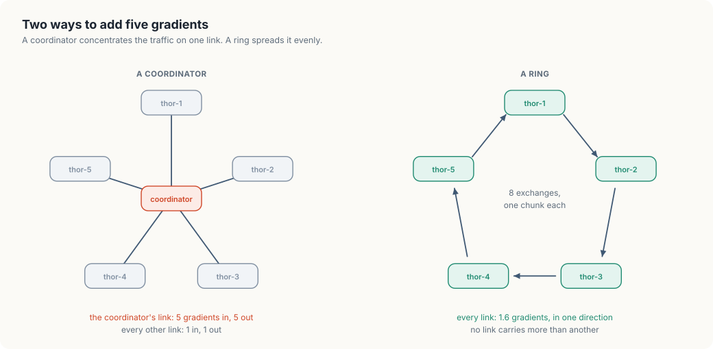

7. Collective communication and training failures
The jobs in the earlier chapters each ran on one machine. A model that is too large or too slow to train on one machine is trained on several at once, and that changes what a failure means. In this chapter, we will look at what the machines of a training job say to each other during every step, why the failure of one machine stops all of them, and how often a job should save its state so that a failure costs little.
We will first reason about the communication with pencil and paper, on the five Thors
from chapter 4. Then we will write allreduce, in Go and in Rust: five workers running
at the same time, connected in a ring, exchanging the pieces of a gradient. We will run
it healthy, run it again with one worker failing part of the way through, and finish
with the arithmetic of checkpoints.
This chapter covers
- one step of training on several machines, and the sum every machine needs
- all-reduce, and why a ring carries it better than a coordinator
- the cost of a step in gigabytes, for our Thors and our Sparks
- five concurrent workers in Go (goroutines and channels) and in Rust (threads and channels)
- how the failure of one worker spreads around the ring, one neighbour per exchange
- Young’s formula for the time between checkpoints
One step of training on five machines
Training adjusts a model’s parameters, the numbers that make up the model, a little at a time. One step takes a batch of training examples, measures how wrong the model’s output is for them, and computes a gradient: a list with one number for each parameter, saying in which direction and how strongly that parameter should change. The step ends by changing every parameter by a small multiple of its gradient entry.
With five machines, each holds a full copy of the model and takes a different batch. Each computes its own gradient. Then all five have to apply the same change, or their copies of the model drift apart. The change they apply is the average of the five gradients, so before any machine can finish the step, every machine needs the sum of all five gradients.
That requirement has a name. An operation in which every member of a group contributes a value and every member receives the combined result is called all-reduce. It belongs to a family called collective communication, a term from the MPI standard for operations that a group of processes performs together, as opposed to one process sending a message to one other. On NVIDIA GPUs the library that implements these operations is NCCL, the NVIDIA Collective Communications Library, and training frameworks call it once per step.
The gradient is as large as the model. A model with 7 billion parameters stored as 16-bit numbers has a gradient of 14 GB. The step cannot finish until 14 GB from each machine have been combined and the result has reached every machine, so the network between the machines is part of the inner loop of training.
Two ways to add five gradients
The obvious design gives the job to one machine. Every worker sends its gradient to a coordinator, the coordinator adds them, and sends the sum back to every worker.
Count what the coordinator’s network link carries in one step: five gradients in and five out. Every other link carries one in each direction. The coordinator’s link is the bottleneck, and it gets worse in proportion to the number of workers. With 14 GB gradients and five workers, 70 GB pass through one link in each direction, every step.
The second design has no coordinator. Arrange the workers in a ring, so each has a left and a right neighbour, and cut every gradient into as many chunks as there are workers. Figure 7.1 compares the two shapes.

The ring works in two phases. We follow one chunk, chunk 0, through both. Our five workers start with the values 1, 2, 3, 4, and 5 in chunk 0, so its sum is 15.
In the first phase, each worker passes a partial sum to the right, and the receiver adds its own value:
thor-1sends its chunk 0, the value 1, tothor-2.thor-2adds its own 2 and sends 3 tothor-3.thor-3adds 3 and sends 6 tothor-4.thor-4adds 4 and sends 10 tothor-5.thor-5adds 5 and now holds 15, the finished sum of chunk 0.
That took four exchanges, one fewer than the number of workers. Meanwhile the other four
chunks made the same journey from different starting points: chunk 1 started at thor-2
and finished at thor-1, and so on. Every worker sent one chunk in every exchange, each
worker ends the phase holding the finished sum of exactly one chunk, and no two hold the
same one.
In the second phase the finished chunks travel around the ring so that everyone gets a
copy. thor-5 sends the 15 to thor-1, which stores it and passes it on, and after
four more exchanges every worker holds it. The other finished chunks circulate at the
same time.
Now count what a link carries. With N workers there are 2(N − 1) exchanges, and each sends one chunk, which is one Nth of a gradient, across every link. A worker therefore sends 2(N − 1)/N gradients’ worth of data per step. For five workers that is 1.6, and however many workers join, it stays below 2. Every link carries the same amount, and none is special.
Here is what that costs on our machines for the 14 GB gradient:
| Workers | Link between them | Sent by each worker per step | Time for the exchange |
|---|---|---|---|
| five Thors | one 25 GbE lane, 3.125 GB/s | 1.6 × 14 = 22.4 GB | 7.2 s |
| five Thors | four bonded lanes, 12.5 GB/s | 22.4 GB | 1.8 s |
| two Sparks | the 200 GbE cable, 25 GB/s | 1.0 × 14 = 14 GB | 0.56 s |
A step whose computation takes a second is dominated by seven seconds of communication on a single 25 GbE lane. This is the reason the fast links on these machines exist, and the reason chapter 8 places a job’s workers by the links between them.
One more property follows from the ring’s shape. Every chunk crosses every link. If one link is slower than the rest, every chunk waits for it, and the whole step runs at the speed of the slowest link.
When one worker fails
The same shape decides what happens when a worker fails in the middle of a step. A worker’s every exchange depends on its left-hand neighbour: it cannot add to a chunk it has not received. So when one worker stops, its right-hand neighbour is stuck at its next exchange. That neighbour had already sent its chunk for the exchange, so the worker after it completes one more exchange and is stuck at the following one. The stall travels around the ring, one worker per exchange, until it has reached everyone.
When the stall is complete, no worker holds the sum. Each holds some finished chunks, some partial sums, and some of its own original values, in a mixture that depends on where it was stopped. The step cannot be finished by the workers that remain, because the failed worker’s values for some chunks were not sent.
The model in every worker’s memory is intact, since the step had not yet changed it. But a training job is built as a fixed group: its workers were started together with a fixed ring, and the frameworks do not shrink the ring in mid-run. The practical response to one failed worker is to stop all of them, replace the failed one, and start the whole group again from the last saved state.
This has a consequence for the control plane that the single-machine jobs did not have. The controller that owns a training job treats its pods as one unit: when one pod fails, it deletes all of them and creates them all again. And it makes the two numbers from chapter 3 matter in a new way. The time to detect the failed machine is time during which the surviving machines hold their GPUs and do nothing.
Low-level design: allreduce
| Type | Holds | Rule it keeps |
|---|---|---|
message | a chunk’s index and its value | one message per exchange per worker |
Worker | its ring position, its gradient, a channel from the left and one to the right | it only sends right and only receives left |
result | exchanges completed, and why the worker stopped early | one per worker |
| Operation | Does |
|---|---|
Worker.Run(n) | performs 2(n − 1) exchanges: send one chunk right, receive one from the left, add it in the first phase and store it in the second |
ring(n, failing, failAfter) | builds the channels, starts every worker at once, and waits for all of them |
interval(jobMTBF) | the time between checkpoints that loses the least work |
Building allreduce
Each worker in the program stands for one Thor. One number stands for each chunk, which keeps the output readable. The algorithm does the same thing to a chunk of three gigabytes.
A worker and its two channels
A worker has a position in the ring, its gradient, and two channels: it receives on one and sends on the other. Both languages use a channel, a queue that one concurrently running piece of code puts values into and another takes them out of. Nothing else is shared between workers, which mirrors the real situation: machines in a training job share no memory, only a network.
Listing 7.1 The message, the worker, and how long it waits, in Go. code/go/allreduce/main.go
// message carries one chunk of a gradient from a worker to its right-hand
// neighbour.
type message struct {
// chunk is the index of the chunk within the gradient.
chunk int
// value is the chunk's contents: one number stands for the whole chunk.
value int
}
// Worker is one machine's part in the step.
type Worker struct {
// id is the worker's position in the ring, from 0.
id int
// gradient holds one value per chunk. It starts as this worker's own
// gradient and ends as the sum over all workers.
gradient []int
// in receives from the left-hand neighbour, and out sends to the right.
in <-chan message
out chan<- message
// failAfter is the number of messages the worker exchanges before it
// fails, or -1 for a worker that stays healthy.
failAfter int
}
// errFailed is the result of the worker that the run makes fail.
var errFailed = errors.New("failed")
// patience is how long a worker waits for its neighbour before giving up.
const patience = 100 * time.Millisecond
Listing 7.2 The message, the worker, and how long it waits, in Rust. code/rust/allreduce/src/main.rs
/// Carries one chunk of a gradient from a worker to its right-hand neighbour.
struct Message {
/// The index of the chunk within the gradient.
chunk: usize,
/// The chunk's contents: one number stands for the whole chunk.
value: i64,
}
/// One machine's part in the step.
struct Worker {
/// The worker's position in the ring, from 0.
id: usize,
/// One value per chunk. It starts as this worker's own gradient and ends
/// as the sum over all workers.
gradient: Vec<i64>,
/// Receives from the left-hand neighbour.
inbox: Receiver<Message>,
/// Sends to the right-hand neighbour.
out: Sender<Message>,
/// The number of messages the worker exchanges before it fails, if the
/// run makes it fail.
fail_after: Option<usize>,
}
/// How long a worker waits for its neighbour before giving up.
const PATIENCE: Duration = Duration::from_millis(100);The exchanges
Run is the algorithm. Each pass of its loop is one exchange: send a chunk to the right,
then wait for a chunk from the left. The chunk to send is found by counting backwards
from the worker’s own position, one place per exchange. Working through the hand example
shows why that is right: after the first exchange, the chunk a worker sends next is
always the one it received last.
Listing 7.3 A worker's 2(n − 1) exchanges, in Go. code/go/allreduce/main.go
// Run performs the worker's 2(n-1) exchanges. In each one it sends a chunk to
// the right and receives a chunk from the left. During the first n-1
// exchanges it adds what it receives to its own chunk. During the last n-1
// the chunks it receives are finished sums, and it stores them. Run returns
// the number of exchanges completed and the reason it stopped early, if any.
func (w *Worker) Run(n int) (int, error) {
for step := range 2 * (n - 1) {
if step == w.failAfter {
return step, errFailed
}
// The chunk to send moves one place back around the gradient each
// step, so after the first step it is the chunk just received.
chunk := mod(w.id-step, n)
w.out <- message{chunk, w.gradient[chunk]}
reducing := step < n-1
select {
case m := <-w.in:
if reducing {
w.gradient[m.chunk] += m.value
} else {
w.gradient[m.chunk] = m.value
}
case <-time.After(patience):
return step, fmt.Errorf("no chunk from %s within %v", name(mod(w.id-1, n)), patience)
}
}
return 2 * (n - 1), nil
}
Listing 7.4 A worker's 2(n − 1) exchanges, in Rust. code/rust/allreduce/src/main.rs
impl Worker {
/// Performs the worker's 2(n-1) exchanges. In each one it sends a chunk to
/// the right and receives a chunk from the left. During the first n-1
/// exchanges it adds what it receives to its own chunk. During the last
/// n-1 the chunks it receives are finished sums, and it stores them.
/// Returns the worker with the number of exchanges completed and the
/// reason it stopped early, if any.
fn run(mut self, n: usize) -> (Self, usize, Option<String>) {
for step in 0..2 * (n - 1) {
if self.fail_after == Some(step) {
return (self, step, Some("failed".to_owned()));
}
// The chunk to send moves one place back around the gradient each
// step, so after the first step it is the chunk just received.
// Adding 2n keeps the subtraction from going below zero.
let chunk = (self.id + 2 * n - step) % n;
// The right-hand neighbour may have stopped; its channel still accepts.
let _ = self.out.send(Message {
chunk,
value: self.gradient[chunk],
});
let reducing = step < n - 1;
match self.inbox.recv_timeout(PATIENCE) {
Ok(m) if reducing => self.gradient[m.chunk] += m.value,
Ok(m) => self.gradient[m.chunk] = m.value,
Err(_) => {
let why = format!(
"no chunk from {} within {PATIENCE:?}",
name((self.id + n - 1) % n)
);
return (self, step, Some(why));
}
}
}
(self, 2 * (n - 1), None)
}
}The wait for the left-hand neighbour has a time limit, which the program calls
patience. In Go the wait is a select with two cases, a message on the channel or the
timer from time.After, and whichever is ready first runs. In Rust it is the channel’s
own recv_timeout, which returns an error if nothing arrives in time. Without the limit
a worker whose neighbour had failed would wait forever, and the program, like a training
job with no timeouts, would hang with no report of what went wrong.
The Rust version of run takes self by value and returns it. The worker is moved into
its thread when the thread starts and moved back out with the result when it ends, so
the main thread can read each worker’s final gradient without any lock.
Building the ring
ring creates one channel per link and gives each worker the receiving end of its own
link and the sending end of its right-hand neighbour’s. It then starts every worker at
once and waits for all of them.
Listing 7.5 Connecting the workers and running them together, in Go. code/go/allreduce/main.go
// result is what one worker reports when it stops.
type result struct {
steps int
err error
}
// ring connects n workers in a circle, runs them all at once, and returns the
// workers and their results. The worker at position failing stops after
// failAfter exchanges; pass -1 for a run with no failure.
func ring(n, failing, failAfter int) ([]*Worker, []result) {
// Each link holds every message a worker can send in one step, so a send
// goes through even when the receiver has stopped.
links := make([]chan message, n)
for i := range links {
links[i] = make(chan message, 2*(n-1))
}
workers := make([]*Worker, n)
for i := range workers {
gradient := make([]int, n)
for chunk := range gradient {
gradient[chunk] = i + 1 + 10*chunk
}
workers[i] = &Worker{id: i, gradient: gradient, in: links[i], out: links[mod(i+1, n)], failAfter: -1}
}
if failing >= 0 {
workers[failing].failAfter = failAfter
}
results := make([]result, n)
var wg sync.WaitGroup
for i, w := range workers {
wg.Go(func() {
steps, err := w.Run(n)
results[i] = result{steps, err}
})
}
wg.Wait()
return workers, results
}
Listing 7.6 Connecting the workers and running them together, in Rust. code/rust/allreduce/src/main.rs
/// Connects n workers in a circle, runs them all at once, and returns each
/// worker with its result. The worker named in `failing` stops after that
/// many exchanges.
fn ring(n: usize, failing: Option<(usize, usize)>) -> Vec<(Worker, usize, Option<String>)> {
// One channel per link. `senders[i]` leads to worker i.
let (senders, receivers): (Vec<_>, Vec<_>) = (0..n).map(|_| mpsc::channel()).unzip();
let workers: Vec<Worker> = receivers
.into_iter()
.enumerate()
.map(|(id, inbox)| Worker {
id,
gradient: own_gradient(id, n),
inbox,
out: senders[(id + 1) % n].clone(),
fail_after: failing
.filter(|(who, _)| *who == id)
.map(|(_, after)| after),
})
.collect();
let handles: Vec<_> = workers
.into_iter()
.map(|w| thread::spawn(move || w.run(n)))
.collect();
handles
.into_iter()
.map(|h| h.join().expect("a worker panicked"))
.collect()
}In Go each worker runs in a goroutine started with wg.Go, a method of
sync.WaitGroup that starts a function and counts it, and wg.Wait blocks until all
have returned. Each goroutine writes its result into its own element of results, so
no two goroutines write the same memory. In Rust each worker runs in a thread from
thread::spawn, and join waits for the thread and hands back what run returned.
The Go channels have a buffer large enough for every message a worker can send in a step, and the Rust channels have no limit. A send therefore completes even when the receiving worker has stopped, as it does on a real network, where data sent to a dead machine leaves the sender and is acknowledged by nobody. The sender finds out only when it waits for something in return.
The time between checkpoints
The last piece is arithmetic. Saving a checkpoint, the model’s parameters and the position in the training data, takes time during which no training happens. Saving rarely wastes little time on checkpoints and loses much work at each failure. Saving often does the opposite. Somewhere between lies the interval that wastes the least.
Let C be the time one checkpoint takes, and M the job’s mean time between failures (MTBF), the average time from one failure to the next. With a checkpoint every T seconds:
- the fraction of time spent writing checkpoints is C / T;
- a failure arrives, on average, halfway between two checkpoints, so it destroys T / 2 of work, and with one failure every M seconds the fraction of time lost that way is T / (2M).
The total, C / T + T / (2M), is smallest when the two parts are equal, which happens at T = √(2CM). This is Young’s formula, published in 1974.
The M in the formula is the job’s, and a job fails when any one of its machines fails. A job on N machines therefore fails N times as often as one machine: its MTBF is one machine’s divided by N.
Listing 7.7 Young's formula, in Go. code/go/allreduce/main.go
// Costs and failure rates for the checkpoint arithmetic, in seconds.
const (
// checkpointCost is the time one checkpoint takes to write.
checkpointCost = 50.0
// machineMTBF is the mean time between failures of one machine: 30 days.
machineMTBF = 30 * 24 * 3600.0
)
// interval returns the time between checkpoints that loses the least work,
// by Young's formula: the square root of twice the checkpoint cost times the
// job's mean time between failures.
func interval(jobMTBF float64) float64 {
return math.Sqrt(2 * checkpointCost * jobMTBF)
}
Listing 7.8 Young's formula, in Rust. code/rust/allreduce/src/main.rs
/// The time one checkpoint takes to write, in seconds.
const CHECKPOINT_COST: f64 = 50.0;
/// The mean time between failures of one machine, in seconds: 30 days.
const MACHINE_MTBF: f64 = 30.0 * 24.0 * 3600.0;
/// Returns the time between checkpoints that loses the least work, by Young's
/// formula: the square root of twice the checkpoint cost times the job's mean
/// time between failures.
fn interval(job_mtbf: f64) -> f64 {
(2.0 * CHECKPOINT_COST * job_mtbf).sqrt()
}The run
Listing 7.9 The healthy step, the failed step, and the checkpoint table, in Go. code/go/allreduce/main.go
func main() {
const n = 5
fmt.Printf("ring all-reduce over %d workers, %d chunks each:\n", n, n)
workers, _ := ring(n, -1, 0)
for i := range n {
own := make([]int, n)
for chunk := range own {
own[chunk] = i + 1 + 10*chunk
}
fmt.Printf(" %s starts with %-17s and ends with %s\n", name(i), show(own), show(workers[i].gradient))
}
sent := 2 * (n - 1)
fmt.Printf(" each worker sent %d chunks, %.1f times its gradient; %d messages in all\n",
sent, float64(sent)/n, sent*n)
fmt.Printf("the same step, with %s failing after 2 of its %d exchanges:\n", name(2), sent)
_, results := ring(n, 2, 2)
for i, r := range results {
fmt.Printf(" %s stopped after %d of %d: %v\n", name(i), r.steps, sent, r.err)
}
fmt.Println("checkpoint interval, for a 50 s checkpoint and one failure per machine every 30 days:")
fmt.Println(" machines job fails every checkpoint every time lost")
for _, machines := range []int{1, 5, 64, 512} {
jobMTBF := machineMTBF / float64(machines)
every := interval(jobMTBF)
lost := checkpointCost/every + every/(2*jobMTBF)
fmt.Printf(" %8d %10.1f hours %9.0f minutes %8.1f%%\n", machines, jobMTBF/3600, every/60, lost*100)
}
}
Listing 7.10 The healthy step, the failed step, and the checkpoint table, in Rust. code/rust/allreduce/src/main.rs
fn main() {
const N: usize = 5;
println!("ring all-reduce over {N} workers, {N} chunks each:");
for (worker, _, _) in ring(N, None) {
println!(
" {} starts with {:<17} and ends with {}",
name(worker.id),
show(&own_gradient(worker.id, N)),
show(&worker.gradient)
);
}
let sent = 2 * (N - 1);
println!(
" each worker sent {sent} chunks, {:.1} times its gradient; {} messages in all",
sent as f64 / N as f64,
sent * N
);
println!(
"the same step, with {} failing after 2 of its {sent} exchanges:",
name(2)
);
for (worker, steps, why) in ring(N, Some((2, 2))) {
let why = why.unwrap_or_else(|| "finished".to_owned());
println!(
" {} stopped after {steps} of {sent}: {why}",
name(worker.id)
);
}
println!(
"checkpoint interval, for a 50 s checkpoint and one failure per machine every 30 days:"
);
println!(" machines job fails every checkpoint every time lost");
for machines in [1, 5, 64, 512] {
let job_mtbf = MACHINE_MTBF / f64::from(machines);
let every = interval(job_mtbf);
let lost = CHECKPOINT_COST / every + every / (2.0 * job_mtbf);
println!(
" {machines:8} {:10.1} hours {:9.0} minutes {:8.1}%",
job_mtbf / 3600.0,
every / 60.0,
lost * 100.0
);
}
}$ go run ./allreduce
ring all-reduce over 5 workers, 5 chunks each:
thor-1 starts with 1 11 21 31 41 and ends with 15 65 115 165 215
thor-2 starts with 2 12 22 32 42 and ends with 15 65 115 165 215
thor-3 starts with 3 13 23 33 43 and ends with 15 65 115 165 215
thor-4 starts with 4 14 24 34 44 and ends with 15 65 115 165 215
thor-5 starts with 5 15 25 35 45 and ends with 15 65 115 165 215
each worker sent 8 chunks, 1.6 times its gradient; 40 messages in all
the same step, with thor-3 failing after 2 of its 8 exchanges:
thor-1 stopped after 4 of 8: no chunk from thor-5 within 100ms
thor-2 stopped after 5 of 8: no chunk from thor-1 within 100ms
thor-3 stopped after 2 of 8: failed
thor-4 stopped after 2 of 8: no chunk from thor-3 within 100ms
thor-5 stopped after 3 of 8: no chunk from thor-4 within 100ms
checkpoint interval, for a 50 s checkpoint and one failure per machine every 30 days:
machines job fails every checkpoint every time lost
1 720.0 hours 268 minutes 0.6%
5 144.0 hours 120 minutes 1.4%
64 11.2 hours 34 minutes 5.0%
512 1.4 hours 12 minutes 14.1%
In the first part every worker ends with the same five sums, starting with the 15 we computed by hand. Each sent 8 chunks, 1.6 gradients’ worth, as the count predicted.
In the second part thor-3 fails after two exchanges. thor-4, on its right, also
completed two and stopped at the third, waiting for thor-3. thor-5 completed three,
thor-1 four, and thor-2 five. Reading the workers in ring order from the failure,
the counts are 2, 3, 4, 5: the stall moved one worker per exchange, as we reasoned. Each
worker names the neighbour it was waiting for, and only one of the four names the
machine that failed. A person who reads the report from thor-2 alone would suspect
thor-1, which is healthy. Finding the worker that every chain of blame leads back to
is the same counting exercise as chapter 4’s triage.
Animation 7.1 replays both runs on the ring, following chunk 0 in the first and the count of completed exchanges in the second.
The third part assumes that one machine fails every 30 days and that a checkpoint takes 50 seconds, which is 100 GB written at 2 GB per second. These are assumptions for the arithmetic, and the formula takes whatever numbers a real fleet measures.
A job on one machine should checkpoint every 268 minutes and loses 0.6 percent of its time. Our five Thors together fail every 144 hours, and the best interval is exactly two hours, at a cost of 1.4 percent. At 512 machines the job fails every 1.4 hours on average. It should checkpoint every 12 minutes, and 14.1 percent of its time goes to checkpoints and repeated work. The machines are no less reliable than before. There are more of them in one job, and this is why large training jobs invest in making checkpoints fast.
The complete program
Listing 7.11 The complete program in Go. code/go/allreduce/main.go
// Command allreduce runs one step of distributed training's communication:
// five workers each hold a gradient, and every worker has to end the step
// holding the sum of all five.
//
// The workers are goroutines connected in a ring by channels, and they run
// the ring all-reduce algorithm. The program runs the step three ways: with
// every worker healthy, with one worker failing part of the way through, and
// then as arithmetic, to find how often a job of a given size should save a
// checkpoint.
//
// Run it from code/go with:
//
// go run ./allreduce
package main
import (
"errors"
"fmt"
"math"
"strings"
"sync"
"time"
)
// message carries one chunk of a gradient from a worker to its right-hand
// neighbour.
type message struct {
// chunk is the index of the chunk within the gradient.
chunk int
// value is the chunk's contents: one number stands for the whole chunk.
value int
}
// Worker is one machine's part in the step.
type Worker struct {
// id is the worker's position in the ring, from 0.
id int
// gradient holds one value per chunk. It starts as this worker's own
// gradient and ends as the sum over all workers.
gradient []int
// in receives from the left-hand neighbour, and out sends to the right.
in <-chan message
out chan<- message
// failAfter is the number of messages the worker exchanges before it
// fails, or -1 for a worker that stays healthy.
failAfter int
}
// errFailed is the result of the worker that the run makes fail.
var errFailed = errors.New("failed")
// patience is how long a worker waits for its neighbour before giving up.
const patience = 100 * time.Millisecond
// name returns the host name of the worker at a ring position.
func name(id int) string { return fmt.Sprintf("thor-%d", id+1) }
// mod returns a modulo n as a value from 0 to n-1, for negative a as well.
func mod(a, n int) int { return ((a % n) + n) % n }
// Run performs the worker's 2(n-1) exchanges. In each one it sends a chunk to
// the right and receives a chunk from the left. During the first n-1
// exchanges it adds what it receives to its own chunk. During the last n-1
// the chunks it receives are finished sums, and it stores them. Run returns
// the number of exchanges completed and the reason it stopped early, if any.
func (w *Worker) Run(n int) (int, error) {
for step := range 2 * (n - 1) {
if step == w.failAfter {
return step, errFailed
}
// The chunk to send moves one place back around the gradient each
// step, so after the first step it is the chunk just received.
chunk := mod(w.id-step, n)
w.out <- message{chunk, w.gradient[chunk]}
reducing := step < n-1
select {
case m := <-w.in:
if reducing {
w.gradient[m.chunk] += m.value
} else {
w.gradient[m.chunk] = m.value
}
case <-time.After(patience):
return step, fmt.Errorf("no chunk from %s within %v", name(mod(w.id-1, n)), patience)
}
}
return 2 * (n - 1), nil
}
// result is what one worker reports when it stops.
type result struct {
steps int
err error
}
// ring connects n workers in a circle, runs them all at once, and returns the
// workers and their results. The worker at position failing stops after
// failAfter exchanges; pass -1 for a run with no failure.
func ring(n, failing, failAfter int) ([]*Worker, []result) {
// Each link holds every message a worker can send in one step, so a send
// goes through even when the receiver has stopped.
links := make([]chan message, n)
for i := range links {
links[i] = make(chan message, 2*(n-1))
}
workers := make([]*Worker, n)
for i := range workers {
gradient := make([]int, n)
for chunk := range gradient {
gradient[chunk] = i + 1 + 10*chunk
}
workers[i] = &Worker{id: i, gradient: gradient, in: links[i], out: links[mod(i+1, n)], failAfter: -1}
}
if failing >= 0 {
workers[failing].failAfter = failAfter
}
results := make([]result, n)
var wg sync.WaitGroup
for i, w := range workers {
wg.Go(func() {
steps, err := w.Run(n)
results[i] = result{steps, err}
})
}
wg.Wait()
return workers, results
}
// show formats a gradient as its values separated by spaces.
func show(gradient []int) string {
return strings.Trim(fmt.Sprint(gradient), "[]")
}
// Costs and failure rates for the checkpoint arithmetic, in seconds.
const (
// checkpointCost is the time one checkpoint takes to write.
checkpointCost = 50.0
// machineMTBF is the mean time between failures of one machine: 30 days.
machineMTBF = 30 * 24 * 3600.0
)
// interval returns the time between checkpoints that loses the least work,
// by Young's formula: the square root of twice the checkpoint cost times the
// job's mean time between failures.
func interval(jobMTBF float64) float64 {
return math.Sqrt(2 * checkpointCost * jobMTBF)
}
func main() {
const n = 5
fmt.Printf("ring all-reduce over %d workers, %d chunks each:\n", n, n)
workers, _ := ring(n, -1, 0)
for i := range n {
own := make([]int, n)
for chunk := range own {
own[chunk] = i + 1 + 10*chunk
}
fmt.Printf(" %s starts with %-17s and ends with %s\n", name(i), show(own), show(workers[i].gradient))
}
sent := 2 * (n - 1)
fmt.Printf(" each worker sent %d chunks, %.1f times its gradient; %d messages in all\n",
sent, float64(sent)/n, sent*n)
fmt.Printf("the same step, with %s failing after 2 of its %d exchanges:\n", name(2), sent)
_, results := ring(n, 2, 2)
for i, r := range results {
fmt.Printf(" %s stopped after %d of %d: %v\n", name(i), r.steps, sent, r.err)
}
fmt.Println("checkpoint interval, for a 50 s checkpoint and one failure per machine every 30 days:")
fmt.Println(" machines job fails every checkpoint every time lost")
for _, machines := range []int{1, 5, 64, 512} {
jobMTBF := machineMTBF / float64(machines)
every := interval(jobMTBF)
lost := checkpointCost/every + every/(2*jobMTBF)
fmt.Printf(" %8d %10.1f hours %9.0f minutes %8.1f%%\n", machines, jobMTBF/3600, every/60, lost*100)
}
}
Listing 7.12 The complete program in Rust. code/rust/allreduce/src/main.rs
//! Runs one step of distributed training's communication: five workers each
//! hold a gradient, and every worker has to end the step holding the sum of
//! all five.
//!
//! The workers are threads connected in a ring by channels, and they run the
//! ring all-reduce algorithm. The program runs the step three ways: with every
//! worker healthy, with one worker failing part of the way through, and then
//! as arithmetic, to find how often a job of a given size should save a
//! checkpoint.
//!
//! Run it from code/rust with:
//!
//! ```text
//! cargo run -p allreduce
//! ```
use std::sync::mpsc::{self, Receiver, Sender};
use std::thread;
use std::time::Duration;
/// Carries one chunk of a gradient from a worker to its right-hand neighbour.
struct Message {
/// The index of the chunk within the gradient.
chunk: usize,
/// The chunk's contents: one number stands for the whole chunk.
value: i64,
}
/// One machine's part in the step.
struct Worker {
/// The worker's position in the ring, from 0.
id: usize,
/// One value per chunk. It starts as this worker's own gradient and ends
/// as the sum over all workers.
gradient: Vec<i64>,
/// Receives from the left-hand neighbour.
inbox: Receiver<Message>,
/// Sends to the right-hand neighbour.
out: Sender<Message>,
/// The number of messages the worker exchanges before it fails, if the
/// run makes it fail.
fail_after: Option<usize>,
}
/// How long a worker waits for its neighbour before giving up.
const PATIENCE: Duration = Duration::from_millis(100);
/// Returns the host name of the worker at a ring position.
fn name(id: usize) -> String {
format!("thor-{}", id + 1)
}
impl Worker {
/// Performs the worker's 2(n-1) exchanges. In each one it sends a chunk to
/// the right and receives a chunk from the left. During the first n-1
/// exchanges it adds what it receives to its own chunk. During the last
/// n-1 the chunks it receives are finished sums, and it stores them.
/// Returns the worker with the number of exchanges completed and the
/// reason it stopped early, if any.
fn run(mut self, n: usize) -> (Self, usize, Option<String>) {
for step in 0..2 * (n - 1) {
if self.fail_after == Some(step) {
return (self, step, Some("failed".to_owned()));
}
// The chunk to send moves one place back around the gradient each
// step, so after the first step it is the chunk just received.
// Adding 2n keeps the subtraction from going below zero.
let chunk = (self.id + 2 * n - step) % n;
// The right-hand neighbour may have stopped; its channel still accepts.
let _ = self.out.send(Message {
chunk,
value: self.gradient[chunk],
});
let reducing = step < n - 1;
match self.inbox.recv_timeout(PATIENCE) {
Ok(m) if reducing => self.gradient[m.chunk] += m.value,
Ok(m) => self.gradient[m.chunk] = m.value,
Err(_) => {
let why = format!(
"no chunk from {} within {PATIENCE:?}",
name((self.id + n - 1) % n)
);
return (self, step, Some(why));
}
}
}
(self, 2 * (n - 1), None)
}
}
/// Connects n workers in a circle, runs them all at once, and returns each
/// worker with its result. The worker named in `failing` stops after that
/// many exchanges.
fn ring(n: usize, failing: Option<(usize, usize)>) -> Vec<(Worker, usize, Option<String>)> {
// One channel per link. `senders[i]` leads to worker i.
let (senders, receivers): (Vec<_>, Vec<_>) = (0..n).map(|_| mpsc::channel()).unzip();
let workers: Vec<Worker> = receivers
.into_iter()
.enumerate()
.map(|(id, inbox)| Worker {
id,
gradient: own_gradient(id, n),
inbox,
out: senders[(id + 1) % n].clone(),
fail_after: failing
.filter(|(who, _)| *who == id)
.map(|(_, after)| after),
})
.collect();
let handles: Vec<_> = workers
.into_iter()
.map(|w| thread::spawn(move || w.run(n)))
.collect();
handles
.into_iter()
.map(|h| h.join().expect("a worker panicked"))
.collect()
}
/// Returns the gradient a worker starts with: a different value in each chunk.
fn own_gradient(id: usize, n: usize) -> Vec<i64> {
(0..n).map(|chunk| (id + 1 + 10 * chunk) as i64).collect()
}
/// Formats a gradient as its values separated by spaces.
fn show(gradient: &[i64]) -> String {
gradient
.iter()
.map(i64::to_string)
.collect::<Vec<_>>()
.join(" ")
}
/// The time one checkpoint takes to write, in seconds.
const CHECKPOINT_COST: f64 = 50.0;
/// The mean time between failures of one machine, in seconds: 30 days.
const MACHINE_MTBF: f64 = 30.0 * 24.0 * 3600.0;
/// Returns the time between checkpoints that loses the least work, by Young's
/// formula: the square root of twice the checkpoint cost times the job's mean
/// time between failures.
fn interval(job_mtbf: f64) -> f64 {
(2.0 * CHECKPOINT_COST * job_mtbf).sqrt()
}
fn main() {
const N: usize = 5;
println!("ring all-reduce over {N} workers, {N} chunks each:");
for (worker, _, _) in ring(N, None) {
println!(
" {} starts with {:<17} and ends with {}",
name(worker.id),
show(&own_gradient(worker.id, N)),
show(&worker.gradient)
);
}
let sent = 2 * (N - 1);
println!(
" each worker sent {sent} chunks, {:.1} times its gradient; {} messages in all",
sent as f64 / N as f64,
sent * N
);
println!(
"the same step, with {} failing after 2 of its {sent} exchanges:",
name(2)
);
for (worker, steps, why) in ring(N, Some((2, 2))) {
let why = why.unwrap_or_else(|| "finished".to_owned());
println!(
" {} stopped after {steps} of {sent}: {why}",
name(worker.id)
);
}
println!(
"checkpoint interval, for a 50 s checkpoint and one failure per machine every 30 days:"
);
println!(" machines job fails every checkpoint every time lost");
for machines in [1, 5, 64, 512] {
let job_mtbf = MACHINE_MTBF / f64::from(machines);
let every = interval(job_mtbf);
let lost = CHECKPOINT_COST / every + every / (2.0 * job_mtbf);
println!(
" {machines:8} {:10.1} hours {:9.0} minutes {:8.1}%",
job_mtbf / 3600.0,
every / 60.0,
lost * 100.0
);
}
}Summary
- Each step of training on several machines ends with an all-reduce: every worker contributes a gradient and every worker needs the sum.
- A ring all-reduce cuts each gradient into N chunks and takes 2(N − 1) exchanges. Each worker sends a little under two gradients’ worth of data, and every link carries the same load.
- Every chunk crosses every link, so the step runs at the speed of the slowest link.
- A failed worker stalls its right-hand neighbour, and the stall moves around the ring one worker per exchange. The job restarts as a group from its last checkpoint.
- The time between checkpoints that wastes the least is √(2CM), where C is the cost of a checkpoint and M is the job’s mean time between failures, which shrinks as the job grows.
References
- NVIDIA, NCCL documentation: https://docs.nvidia.com/deeplearning/nccl/user-guide/docs/index.html
- A. Gibiansky, “Bringing HPC Techniques to Deep Learning”, Baidu Research, 2017, which describes the ring all-reduce used here.
- P. Patarasuk and X. Yuan, “Bandwidth optimal all-reduce algorithms for clusters of workstations”, Journal of Parallel and Distributed Computing, 2009.
- J. W. Young, “A first order approximation to the optimum checkpoint interval”, Communications of the ACM, 17(9), 1974.
- MPI Forum, MPI: A Message-Passing Interface Standard, chapter on collective communication: https://www.mpi-forum.org/docs/